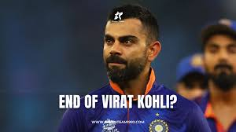
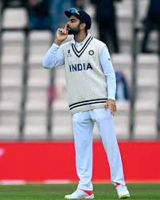
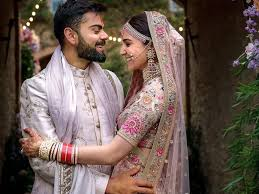

- 1988 - 5 nov , one child born at premnath singh and saroj kohli house
- December 18, 2006- changed in virat : the another virat rise
in the middle of cruical match against the Karnataka in Ranji trophy , his father died . he was in two minds whether to play or not.
he went to play and scored brave 90. in morning , he came for funeral . it was his father's dream : virat will play for india .
a criminal lawyer premnath took his 9 years old son to the west Delhi cricket academy.
- 2008(June) - Still a teenager, Virat is signed by IPL franchise Royal Challengers Bangalore on a youth contract for just Rs 12.5 lakhs.
- 2008(August) - Virat was called up to the Indian ODI squad for the first time, playing all 5 matches in an away series against Sri Lanka.
- 2011 - Virat played every single match of India’s successful 2011 World Cup campaign.
“Sachin Tendulkar has carried the burden of the nation for 21 years. It is time we carried him on our shoulders.”
-
2014 Kohli vs England - Virat Kohli's 2014 tour to England was full of huge challenges. The Indian star had a bizarre tour as he could have just managed 134 runs in 5 matches at an average of 13.40. It was a hard time for the right-handed batter as pacer James Anderson got him out four times on that tour.
- 2017(11 December)- Virat and Anushka Sharma tied the knot in a fairytale wedding ceremony in Italy.



- everything goes in flow and then the track was changed..
2020 -India tour of Australia: great consistency but never got a hundred which was a bit unusual for anyone in the world to see Player like him not getting hundred.
- 2021- one beautiful event happened :Virat Kohli and Anushka Sharma were blessed with a baby girl named "Vamika"
- 2024-this couple got blessed with second child named "Akaay"